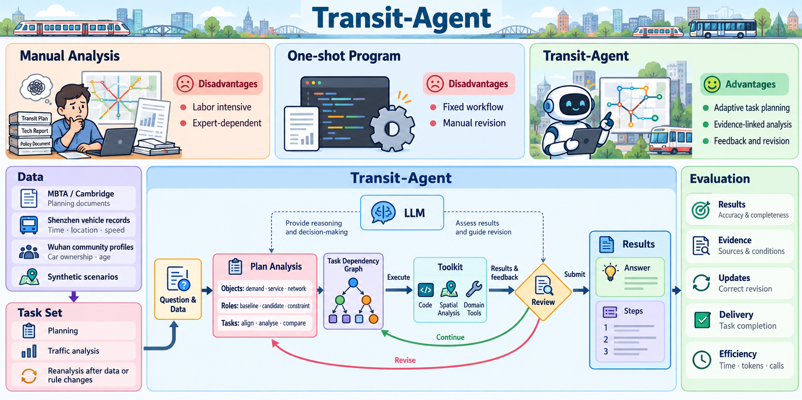
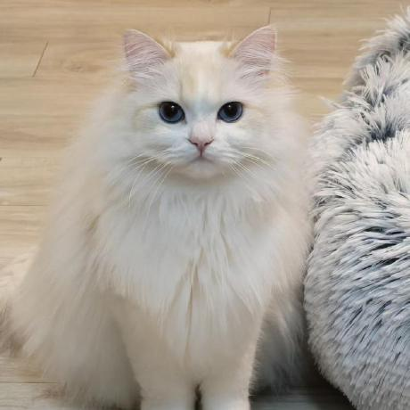
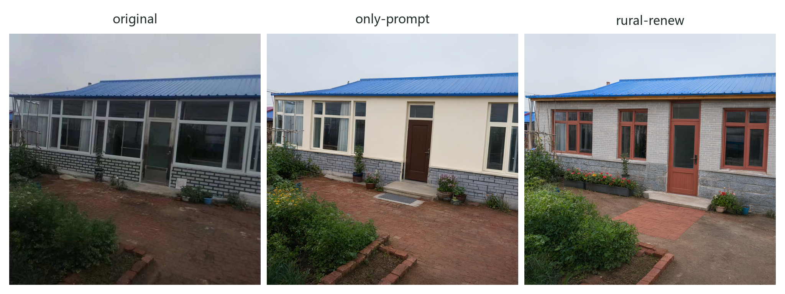
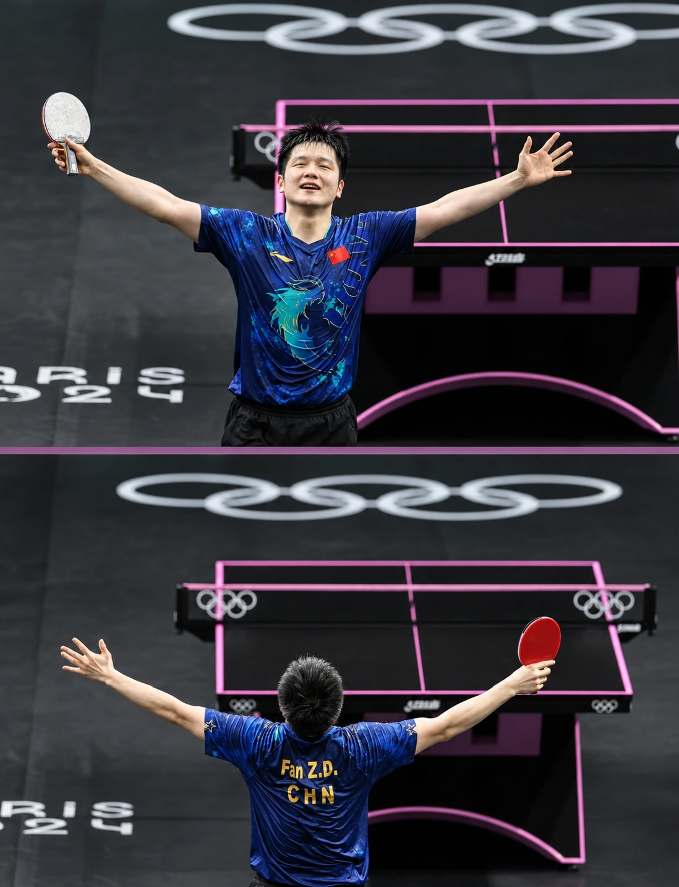
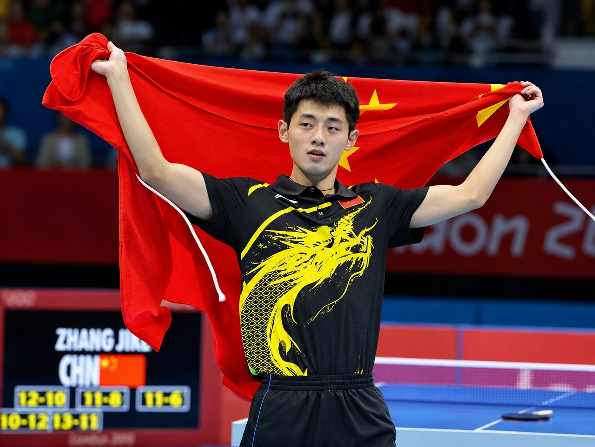
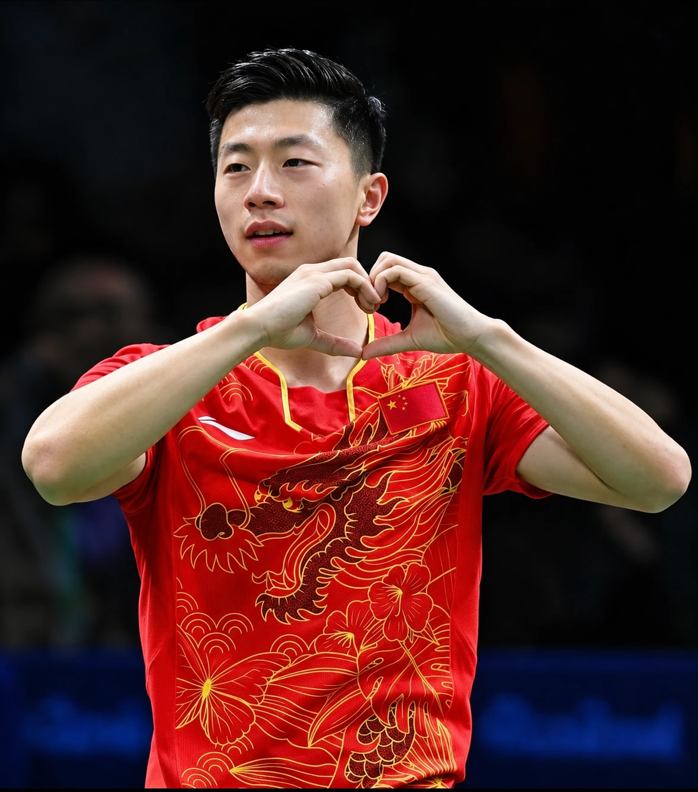

Transit-Agent

I’m a third-year Geographic Information Science undergraduate at China University of Geosciences (Wuhan).
My research interests include AI agents, spatial intelligence, and multimodal understanding and generation.

Geographic Information Science, undergraduate
School of Geography and Information Engineering


Tibet Dezhong Geographic Information Co., Ltd. (Beijing R&D Department)
Beijing Kesitengda Technology Co., Ltd.
I love playing table tennis. I once won the men’s singles title at my college’s table tennis tournament. Fan Zhendong, Zhang Jike, and Ma Long are among my favorite players.


